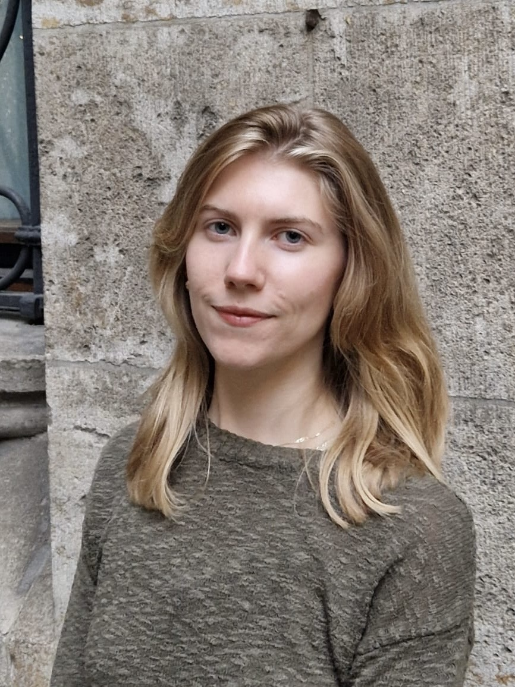

About
My research focuses on branching processes and models of biological populations. I am interested branching with genealogical dependence, potentially leading to reinforcement of the tree structure. My recent work explores branching coupled to genealogy-dependent resource flows, with some similarity to catalytic processes.
I was trained as a physicist, completing undergraduate and graduate work in cosmic-ray and astroparticle physics. My doctoral research involved simulation of rare particle branching processes, inference for point processes, data analysis using frequentist statistical methods and machine learning, and numerical modeling of particle transport and interaction within dynamic astrophysical systems. Much of this work was carried out within large experimental collaborations, including IceCube.
I am currently completing my doctoral work as a visiting graduate student in Munich and will be seeking postdoctoral positions beginning in fall 2026.
